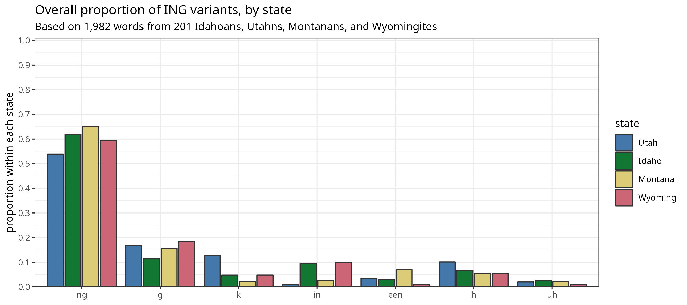

Between April and July, I distributed a survey to people in Idaho, Montana, Wyoming, and Utah, asking them to record themselves reading a bunch of words and answering some open-ended questions about language. The results from this study will be published in more academic venues, but for now I wanted to explain in non-academic terms what the basic, preliminary results are from that study.
If you haven’t taken the survey yet and you want to, you can do so by clicking here.
Overview of the study
I set up a study to analyze pronunciation in Idaho, Montana, Wyoming, and Utah. Of the four states, Utah has been reseached the most by linguists. There have been very occasional studies on word choice and grammar in the other states over the last century, but the number of studies on actual pronunciation can be counted on one hand: two in Idaho, two in Montana, and zero in Wyoming. So, this study aims to give a basic first look at what’s going on.
I decided to have people record audio from their own devices. Yes, this is going to make some things inconsistent across recordings because people will use different microphones. Again, this is a first pass at what’s going on. Besides, it’s a lot easier (and more covid-friendly) to collect data remotely than it is to travel to people in-person.
What do I look for? I decided to focus my study around things known to be interesting in Utah. I know it’s not the best method since there’s no reason to expect Utah English pronunciation to be found in other states. But, I’m basically going in blind, and I had to start somewhere. I’ll list those linguistic variables below.
As a way to collect additional data, I decided to have people answer some open-ended questions as well. For example, I asked people whether they think their state has an accent. I could have asked them type the response, but I think the responses were more detailed and genuine when spoken rather than typed out. The side benefit of this is I get a chance to hear how people talk when they’re not reading a rigid list of words.
To distribute the survey, I went to Reddit. I found every subreddit dedicated to a city, region, or university based in the four states. For example, I posted in bigger ones like r/Wyoming, but also smaller ones like r/Butte, r/NorthIdaho, and r/UVU. I posted in something like 60 subreddits over the course of a couple months. 324 people completed the survey.
From there, I analyzed the data using pretty typical techniques for current sociolinguistic work. For some things (like consonants), I just listened and transcribed what I heard. For other things (like vowels), I’m in the processs of extracting acoustic measurements from the audio and some statistics and stuff to crunch the numbers.
Hopefully that gives you an decent big-picture view of what’s going on with this study.
Linguistic Variables
In the survey, I asked people to read aloud a list of 200 words. Each of those words was specifically targetting one more of the following linguistic variables. I’ll briefly mention them here as an overview, but I’ll give more detail in the sections below.
Things having to do with consonants:
- The word mountain and similar words (Latin, gluten, rotten, etc.). How is that t pronounced and how is the second syllable pronounced?
- Inserting a t sound in words like else, Chelsea, Nelson, and also.
- How are ng’s pronounced at the ends of words? There’s “g-dropping”, but there are others who add an extra sound at the end.
- How do people pronounce thr as in three, through, or throw?
Unfortunately, while I did collect a lot of data on vowels, I just haven’t had the time to analyze them yet.
What results do I have so far?
I collected far more data than I ever could have hoped for! That’s good news for me and my research agenda. The bad news is it’s going to take some time to get all the results. Here are some of the things I’ve looked at (briefly) so far.
- What are the ways that people pronounce the linguistic variables listed above?
- What differences are there across the four states?
Of course there are many, many other questions I can of this data that I just haven’t gotten to yet. Here are a few:
- How are the pronunciation differences listed above different across genders, ethnicities, ages, or other demographic info?
- Are there regional differences within states? Many participants said that they think so, and I think they’re probably right. But I don’t have quite enough data to say for sure, and I haven’t done that analysis yet.
- Do people from urban areas sound different from people in rural areas? Again, lots of people said there is. I just haven’t done the actual linguistic analysis to support this. I asked participants whether they wanted to live in an urban or rual place. I think that aspiration may have a bigger effect than the actual place you grew up. We’ll see.
- Do Mormons have an accent? Is that distinct from non-practicing Mormons, ex-Mormons, and non-members? I don’t know. I asked about it and I have data on people’s affiliation with the Church of Jesus Christ of Latter-day Saints. I suspect that I’ll find very slight differences, but we’ll see.
- If people said they had some connection to the Church, I asked some additional questions about “Relief Society Voice,” “Missionary Voice,” and “General Authorty Voice.” I got some great comments. So the question is, are those real? I won’t be able to answer this question directly with this data, but I certainly have a lot of comments to draw from when designing my next study!
So, I apologize if the question you want me to answer hasn’t been addressed. Hopefully I can get to some of these soon!
Without further ado, let’s get into the results!
Mountain
When asked whether their own state has an accent, by far the most common thing people mentioned was how people say the word mountain and similar words (fountain, gluten, satin, etc.). Over half the Utahns mentioned this, and a handful of people in other states did too.
So how do people say the word mountain?
Variant 1: moun’n
Despite what most people think, the most common way of saying this word (and words like it) across North American English is like this:
threaten, fountain, mitten, gluten, kitten, satin, button, cotton, Latin
(Alexia, White, female, 2002, Kalispell, MT)
This has what’s called a “glottal stop”, which is that sort of catch in the back of your throat, instead of a typical t sound that you might get in a word like top. After that glottal stop, people go straight into the n sound. So it’s “moun’n”. There is no vowel sound in that second syllable. For the Utahns reading this, I know it sounds crazy to hear that that this is the most common way of saying this word, but it is standard American English pronunciation. You’ll hear it in the news, on the radio, in movies, and in songs.
Variant 2: moun’in
For those with good ears though, you might have picked up on a slightly different way of saying mountain.
Scranton, mountain, button, titan, sentence, threaten, kitten, Latin, certain, gluten, cotton, potent, Clinton, satin, fountain, mitten
(Makenzie, White, female, 1999, Tooele, UT)
What we have here is that same glottal stop that we had in the standard variant (moun’n). But this time, instead of going straight to the n sound, there’s still a vowel there. If we wanted to spell this out, it might be something like “moun’in”.
As it turns out, this variant is somewhat common in Utah. Several studies have anaylzed it and have found that it occurs roughly 15% of the time. It’s not unique to Utah, but it is more common there than in most other areas.
Tangent: Commentary on moun’n and moun’in
The interesting thing is that even though this pronunciation of moun’in is not particularly common, it’s very much on the mind of Utahns. Ask any random Utahn about Utah English and you’ve got decent odds that they’ll say something about mountain. As a grad student, I traveled to Utah to collect some audio and people said, “Oh, so you want me to say mountain, right?”
In the comments people left on the survey, particularly when people talked about whether their state has an accent, it’s clear that this pronunciation is stigmatized. People make fun of it and think it’s bad in some way. However, what’s interesting to me is that the stigma is associated with not just this moun’in variant, but it’s also associated with the General American standard, moun’n. In fact, most of the participants for this study, when discussing mountain, mentioned moun’n instead of moun’in. For example, “Catherine” here apparently feels like moun’n is a Utah thing and has consciously avoided using it.
I know I’ve corrected some of my Utah accent since I’ve been gone for about twenty years. Uh, I no longer say moun’n.
(Catherine, White, female, 1978, Farmington, UT)
So, what seems to be happening is that the stigma associated with the glottal stop in moun’in has spread to the glottal stop in moun’n—even though that’s how most people say it. I don’t know if I’ve ever seen another case where the mainstream, General American pronunciation is stigmatized. For a linguistic nerd like me, this is super fascinating.
Variant 3: mountain
So, for people like Catherine who don’t like the glottal stop, what do they do? They say the t in moutain very clearly. I call this the hyperarticulated variant, mountain. Here’s how Catherine said mountain and similar words in the wordlist:
Scranton, mountain, button, titan, sentence, threaten, kitten, Latin, certain, gluten, cotton, potent, Clinton, satin, fountain, mitten
(Catherine, White, female, 1978, Farmington, UT)
Based on people’s comments, it seems like many Utahns are under the impression that this is how most North Americans say mountain most of the time. I don’t know how else to say this… but that’s simply not accurate! Yes, it is true that most people say mountain with a nice strong t sometimes, particularly when trying to speak clearly or if they’re in a formal situation. But, most of the time, most North Americans say mountain as moun’n. Here’s a chart show the distribution of variants across the four states I collected data from:
The data shows that all three variants are used in all four states. However, you’ll notice that Idaho, Montana, and Wyoming have similar-looking patterns. Pay attention in particular to the height of the purple bars, representing moun’n. People from those three states typically pronounced mountain and similar words in the standard American English way, with a glottal stop and no vowel sound in the second syllable. You’ll also hear moun’in in those three states, though not very often. Research has shown that this variant is not limited to Utah and can be found across the United States, so this is to be expected.
What strikes me though is that the hyperarticulated variant, mountain, is the most common in Utah. Visually, it’s the tallest bar in the Utah panel of the plot above. It seems like the stigma associated with the glottal stop in the other two variants has gotten to people. In Idaho, Montana, and Wyoming, you don’t get this variant nearly as much; it seems like saying mountain with a nice clear t is a Utah thing. So, in a bit of irony, in an effort to avoid sounding like a Utahn (by saying moun’in), Utahns actually sound like Utahns (by overusing the hyperarticulated mountain). Isn’t that wild?
Mountain in Idaho
Focusing on Idaho for a moment, I did hear several people comment on mountain when they were asked whether Idaho has an accent. Perhaps this stigma has made its way from Utah northward into Idaho. To test this, I split the Idahoans into three groups: southeast (Pocatello, Blackfoot, Idaho Falls, Rigby, Rexburg, etc.), southwest (Boise metro area, Twin Falls, etc.), and north (Coeur d’Alene, Lewiston, Moscow, etc.). Here’s a plot showing the distribution of variants by region, compared to Utah:
As it turns out, the closer you get to Utah, the more hyperarticulated mountain you get. In fact, the plot just looks more and more like Utah’s plot. In other words, Utahns say mountain the most, then southeast Idahoans, then southwest Idahoans, and then northern Idahoans. So are there regional accents in Idaho? Here’s one small piece of evidence that there are!
So, next time you hear someone talking about mountain in Utah, you can tell them that most people say moun’n and it’s only in Utah (and areas close to Utah) that you get people saying that distinct t in mountain outside of formal contexts.
t-insertion
Something that I think has largely flown under the radar is the fact that, in some parts of the Mountain West, people put a t sound between l and s sounds, as in faltse, eltse, saltsa, Cheltsea, Oltsen, and Neltson. We’ll call this t-insertion. I have a collection of tapes from rural Utahns born in the 1910s and 1920s and it seems to be quite common among those people. Is it as common today?
As it turns out, no. Of the 2,476 words I’ve listened to so far, just 51 of them (2.1%) had t-insertion. Another 76 words (3.1%) sounded like there could have been a t but I wasn’t sure so I decided to classify them as “maybe.” Still, that means that about 95% of the data didn’t have any indication of t-insertion at all.
That’s not to say it didn’t happen at all. In fact, a couple people did it quite a bit. Here are a few examples (words with asterisks indicate t insertion):
Olsen, pul(t)se, Wilson, Nel(t)son, compul(t)sive, holster
(Michael, White, male, 1961, Coleville, UT)
Olsen, fal(t)se, pul(t)se, salsa, Wil(t)son, Nel(t)son, compul(t)sive, Chel(t)sea, holster
(Lorenzo, White, male, 1991, Idaho Falls, ID)
Olsen, fal(t)se, pul(t)se, salsa, Wil(t)son, Nelson, compulsive, Chelsea, holster
(Pamela, White, female, 1971, Salt Lake City, UT)
This t-insertion appears to be the most common (or perhaps the least rare) in Utah, showing up in about 10% of the words there. In the other states, it’s marginal at best.
-ing
The most common way of pronouncing ing at the ends of words (as in bowling, talking, and sitting) is with that sort of ng sound said towards the back of the mouth. It the result of an n and a g sound combining into one sound. Of 1,949 words I’ve listened to so far, I heard this way of pronouncing ing in 58.3% of them. Here’s a clip of one of the many people who used this variant 100% of the time.
polling, scaling, spelling, bowling, drilling, mulling, feeling, stealing, pulling, fooling, willing, sailing, chilling, kneeling, smelling, pooling, lulling, spooling, ceiling, wailing
(Neil, White, male, 1978, Helena, MT)
Most people are aware of another way that ing is pronounced. People sometimes call it “g-dropping” The term “g-dropping” is a bit of a misnomer because you’re not actually dropping any sounds. You’re just changing the single sound that happens to be spelled with two letters, ng, into a different sound that happens to be spelled with one letter, n, and adding an apostrophe: huntin’, fishin’, swimmin’. As you might expect, this variant was used some of the time—I heard this one 123 times (6.2%) so far. That may seem a bit low, but keep in mind that people tend to speak pretty carefully in this kind of wordlist task and this variant is often perceived as being informal sounding. It was mostly heard in folks from Idaho and Wyoming and hardly ever used by the Utahns or Montanans I’ve listened to so far. Here are clips of two people who used this variant almost 100% of the time:
polling, scaling, spelling, shelling, bowling, drilling, mulling, feeling, stealing, pulling, fooling, willing, sailing, chilling, kneeling, smelling, pooling, lulling, spooling, ceiling, wailing
(Lillian, White, female, 2003, St. Anthony, ID)
polling, spelling, shelling, bowling, drilling, mulling, feeling, stealing, pulling, fooling, willing, sailing, chilling, kneeling, smelling, pooling, lulling, spooling, ceiling, wailing
(Brayden, White, male, 2002, Thermopolis, WY)
You may think that the standard ng and the g-dropped version are the only ways that ing can be pronounced. But you may have also noticed that I have yet to account for about a third of the data still. It may surprise you then that I heard at least five other pronunciations of ing. Intrigued? Read on.
Adding a g or a k
A handful of people pronounced ing with either a g or a k sound at the end. When people mock this accent, they sometimes spell it as talkingk. What’s going on is that the combined ng sound isn’t fully combined, and the g is still pronounced very lightly. This was actually the secondmost common variant and I heard it 284 (14.3%) times. Of the 201 people I’ve listened to so far, 93 of them (46.3%) used it at least once, so it’s not like it’s only said by a few people. It was heard about the same amount in each state, except for Idaho which had it slightly less.
Here’s Matthew, who uses this pronunciation most of the time. You may notice a few words though where he uses a different variant. (Asterisks indicate words with the pronunciation we’re focusing on.)
polling, scaling, spelling, shelling*, bowling*, drilling*, mulling*, feeling*, stealing*, pulling*, fooling*, willing, sailing*, chilling*, kneeling*, smelling*, pooling*, lulling*, spooling*, ceiling*, wailing*
(Matthew, White, male, 1996, Idaho Falls, ID)
And here’s Parker who also uses this variant most of the time. His g is is a little bit lighter than Matthew’s.
polling*, scaling*, spelling*, shelling*, bowling*, drilling*, mulling, feeling, stealing, pulling, fooling*, willing*, sailing, chilling*, kneeling, smelling*, pooling*, lulling*, spooling*, ceiling, wailing*
(Parker, White, male, 1999, Cheyenne, WY)
As you can see, overall, the g sound is pretty light.
Other people pronounce that extra consonant at the end more strongly so it sounds like a full-on k. Overall, I heard this one 137 times (6.9%). But, if we split it up by state, we see that it’s definitely the most common in Utah: Utahns said it 12.8% of the time, Idahons 4.8%, Wyomingites 4.8%, and Montanans 2.2%. So it’s actually used more in Utah than in the other three states combined. Overall, 46 different people used this variant, or 22.9% of the people I’ve listened to so far. The difference between the g and the k is admittedly slight but the main difference is whether there’s a very slight h sound after the consonant (kʰ compared to g). Here’s Payton, for example, who uses a mixture of k, g, and other variants.
tongue*, sang*, clothing, ceiling*, thrashing*, evening*, hang*, king*, fang*, sting, mourning*, sing*, morning*, nothing*, sung*, song*, bang*, something*, throbbing*, sibling*
(Payton, White, non-binary, 2002, Grantsville, UT)
And here’s Hayley, who has this k sound a little more consistently and a little stronger than Payton.
polling*, spelling*, shelling*, bowling*, drilling*, mulling*, feeling*, stealing*, pulling*, fooling*, willing*, sailing, chilling*, kneeling, smelling*, pooling*, lulling*, spooling, ceiling*, wailing
(Hayley, White, female, 1997, Nampa, ID)
As a side note, this pronunciation is not unique to the Rocky Mountains at all. It’s quite common in England, around cities like Manchester and Liverpool. It’s also heard in New York City and is sometimes made fun of in phrases like “Long Guy-land” (for “Long Island”). You occasionally hear it in other people scattered across the USA too, including Shumita Basu, who hosts the Apple News Today podcast.
EEN
Another way that ing is pronounced is sort of a mix of the standard ng and “g-dropping.” What’s happening is you get the “ee” vowel in ing combined with the regular n in “g-dropping.” It’s as if the word sailing were pronounced as salene (that clear salty liquid used in hospitals). I call this one “een” because when people say it, it sounds like the word ends in een instead of ing.
Overall, it’s not particularly common. I heard it in just 3.2% of the words. But, it does appeaar to be the most common in Montana, where it occured in about 7% of the words. Here’s Hope, who doesn’t do it 100% of the time, but is the person who I heard use it the most. In fact, you might even hear a few times when she adds an extra vowel at the end, sort of a “eenuh” sound. I suppose this is just an especially exaggerated form of this variant.
polling*, scaling, spelling*, shelling*, bowling*, drilling*, mulling*, feeling*, stealing*, pulling*, fooling*, willing*, sailing*, chilling*, kneeling*, smelling*, pooling*, lulling*, spooling*, ceiling, wailing*
(Hope, White, female, 1997, Idaho Falls, ID)
And here’s Glen, and older man, who uses een sporadically, mixed with other variants.
clothing*, ceiling, thrashing, evening*, king, sting, mourning, sing*, morning*, nothing*, something, throbbing*, sibling*
(Glen, White, male, 1970, Salt Lake City, UT)
My Californian mother-in-law says this a lot and I heard it a lot in Washington too. So, is this something unique to the Rocky Mountains? It’s probably not exclusive to the area, but my general impression is that it’s more common than in other places.
Adding other sounds at the end
The last two variants I heard were ones that added other sounds at the end of the ng. The first one is where it sounds like there’s an h sound. It’s a little bit like the person exhales after saying the word. This was not particularly common, but I heard it 144 times (7.3%). What’s interesting is that 52 different people said this at least once. A few people even used it more than they used the standard variant. Here’s one of those people saying it that way in all her ing words:
polling, scaling, shelling, bowling, drilling, mulling, feeling, pulling, fooling, willing, sailing, chilling, smelling, pooling, lulling, spooling, ceiling, wailing
(Teresa, White, female, 1968, Pocatello, ID)
The other one I heard is that sometimes people put almost a vowel-like sound at the end. Again, it wasn’t very common, only showing up in 25 (2.5%) of the words I heard. But 10 people said it at least once, and one person used it more than the standard variant. Here’s a clip of someone who uses it a lot, together with other variants mixed in:
polling, scaling, spelling, shelling, bowling, drilling, mulling, feeling, stealing, pulling, fooling, willing, sailing, chilling, kneeling, smelling, pooling, lulling, spooling, ceiling, wailing
(Albert, White, male, 1982, Idaho Falls, ID)
For these last two, it’s hard to tell whether their extra h or uh only happens after ing words, or if it happens more generally. Listening through the words, there are definitely people who add these sounds at the ends of other words too. I’ll have to do some more listening and digging to see if it’s just something that that person does after all/most words or if it really is something to do with ing words in particular.
Regional variation on ING
Here’s an overall view of the variants across the states:

Overall, somewhat similar to each other. Some of the less common variants are more common in some states but not others, but at this point it’s hard to say whether it’s representative of the whole state or just the influence of one person there.
Again, focusing on Idaho, there did seem to be some differences within the state. I’ll again show it compared to Utah:
It’s a bit messy just because there are so many variants, but what stands out to me is that soutwestern Idaho (the purple bar) has the least amount of standard variants ing compared to northern and southwest Idaho and even Utah. Utah has more of the g and k variants than any region in Idaho, but where you hear the most of the other variants is all in southwest Idaho. Again, it’s hard to say whether this is indicative of something going on in the entire region or if it’s just the influence of a couple people, but I thought that pattern was interesting.
Final thoughts on ING
What I’ve learned from this data is that there is massive variation in how ing words are pronounced. I did not anticipate hearing seven different variants. And even if there are that many, I didn’t expect to find at least one person favoring each variant. I want to end with just a couple more clips. These are people that go the opposite of what I’ve played so far in this section. These are people that pronounce ing in lots of different ways, and don’t just favor one variant.
Here’s Catherine. (The same one that we heard from in the section on mountain above.) She uses at least five different variants: a lot of g and een, with some k, h, and ng.
tongue(g), sang(g), clothing(ng), ceiling(een), thrashing(een), evening(een), hang(k), king(g), fang(g), sting(g), mourning(een), morning(een), nothing(ng), sung(k), song(k), bang(h), something(ng), throbbing(een), sibling(een)
(Catherine, White, female, 1978, Farmington, UT)
Most people used more than one variant of ING. What I’d like to do is try to figure out if there are any patterns to when they use what.
THR
This last one is one of my favorites because very few people have noticed it. Consider the sound you hear when an American says the t in words like water and latter. Most people describe it as a d sound, though it’s not exactly the same as the d you get in like dog. It’s pretty much the same sound that you use for a Spanish r like in pero. Linguists call this sound a “tap” or a “flap.” Despite what some people said on social media maybe a year ago, this is not a just California thing—it’s typical of any American or Canadian English speaker.
So, what I’ve noticed is that people pronounce r’s as a flap when they occur after th, as in three, throw, and threat. If you don’t believe me, here is a recording of someone doing that. In the wordlist she read, she pronounces taps 100% of the time.
thrust, thrive, threaten, thrash, three, through, thrill, throne, throb, thread, throng
(Bonnie, female, White, 1948, Wallsburg, UT)
And in case you thought it was exclusive to older, rural people, here’s a clip from a younger person from suburban Utah County :
thrill, thrashing, throat, throttle, threaten, thrive, thrust, throne, thrift, throw, thread, throbbing, through, three
(Deborah, White, female, 1989, Highland, UT)
Despite these examples where people do this a lot, pronouncing these words in this way is not particularly common. I heard it about 8.7% of the time. Here’s the breakdown by state.
So, while not super common anywhere, the flap is heard in all four states. It looks like Utah and Montana are pretty even at around 10% of the time. Meanwhile, Idaho and Wyoming are a little less at roughly 6% of the time.
Interestingly, I took some similar data I had from Washington and it turns out it patterned pretty close to Idaho and Wyoming.
Conclusions
That’s it for now! I’m sorry I wasn’t able to explore more linguistic features. In particular, I’d like to start analyzing some vowels, but acoustic analysis of vowels takes more time and I wanted to get some results out to you in a reasonable amount of time. I will continue to update this page as I get more results, so be sure to check back every few months for new findings.
If you participated in this study, thank you! I gathered way more data than I anticipated, which is always a delight. If you did not participate in the survey and would like to, you can try taking it here. Note that it costs money to keep the survey active because of the third-party plugin I’m using to collect audio, so the survey won’t be live for too much longer. Regardless, thanks for your interest in the project!